Missnöje och idéformning
En upplevd oförrätt eller stress får en konkret måltavla och börjar omsättas i en idé.
01 · Förstå · Påverkanskedjan
Påverkan växer ofta fram stegvis. Följ vägen från den första kartläggningen till att verksamhetens beslut börjar påverkas. Varje steg visas ur angriparens, medarbetarens och organisationens perspektiv. Fall kopplas bara när öppna källor faktiskt belägger det aktuella momentet; ett exempel innebär inte att hela förloppet är känt.
Analysram · 12 frågor från händelse till lärande
Ramen binder samman sidans modeller utan att anta att alla händelser följer samma ordning. Börja där informationen är starkast, dokumentera osäkerhet och gå tillbaka när nya uppgifter förändrar bedömningen.
De utvalda modulerna kompletterar påverkanskedjan med ett brittiskt personalsäkerhetsperspektiv: hur en väg mot insideragerande kan utvecklas och hur digital exponering, kontaktförsök och social manipulering kan påverka personal.
08 · Bedöma · Händelser och fall
Utforska 159 svenska och relevanta internationella fall från 2002–2026. Filtrera på sektor, aktör eller om uppgifterna är bekräftade eller en indikation. Resultatet visas både på kartan och i den sökbara fallförteckningen.
02 · Förstå · Sektormiljöer
Riskerna ser olika ut i olika verksamheter. Välj en av tretton verksamhetsmiljöer för att se vanliga angreppssätt, sårbarheter, varningssignaler och dokumenterade fall. Kommuner och regioner har ett eget tvärsektoriellt spår eftersom samma organisation ofta rymmer socialtjänst, upphandling, tillstånd, vård, trafik och säkerhetskänslig verksamhet.
Otillbörlig påverkan uppstår inte i ett vakuum. Organiserad brottslighets geografi, informella maktordningar och barns uppväxtvillkor påverkar vilka relationer, beroenden och tystnader som en organisation möter. Tre svenska underlag ger olika delar av denna kontext.
SOU 2026:53 ger en försiktig ram för lokal kartläggning av parallella samhällsstrukturer och betonar samverkan mellan kommun, myndigheter och civilsamhälle. ESO 2023:3 visar varför även mindre kommuner behöver analysera nätverkens geografi och rörlighet. SKR:s revisionskartläggning 2026 pekar samtidigt på att kommuners och regioners arbete mot välfärdsbrott fortfarande är under uppbyggnad. SVT:s sammanställning av kommunala granskningar 2019–2026 kan användas för att hitta återkommande kontrollproblem, men innehåller både misstänkta brott och ageranden som endast har ifrågasatts och är därför inte en domsdatabas.
Acta Publica identifierar 1 080 bolag med koppling till en lokalpolitiker som samtidigt fakturerat den kommun eller region där politikern haft sitt uppdrag. Faktureringen uppgick till minst 3,7 miljarder kronor och berörde 232 kommuner och 19 regioner. Av bolagen hade 50 vunnit upphandlingar i den egna kommunen eller regionen under mandatperioden; det uppskattade avtalsvärdet var 4,6 miljarder kronor.
Riskindikatorerna är ojämnt fördelade. De tio största bolagen stod för 59,8 procent av den fakturerade summan, medan medianen per bolag var 73 715 kronor. Bland de 1 080 bolagen hade 107 en förhöjd realtidsrisk i kreditupplysning, 45 skulder hos Kronofogden och 22 en företrädare som dömts för ekonomisk brottslighet. I rapportens bredare urval fanns 71 bolag med en företrädare som Acta Publica kopplar till organiserad brottslighet; tio hade offentliga affärer och fyra ingick i gruppen om 1 080 bolag.
Praktisk användning: matcha deklarerade bolagsintressen hos förtroendevalda och närstående mot leverantörsreskontra, upphandlingar, avtalsändringar, attest och nämnd- eller styrelseansvar. En träff ska leda till dokumenterad och oberoende jävs- och riskprövning – inte till ett antagande om skuld.
Kommuner och regioner är inte en enskild sektor. Samma organisation kan hantera socialtjänst, omsorg, skola, tillstånd, upphandling, samhällsbyggnad, bidrag, vård, kollektivtrafik och säkerhetskänslig verksamhet. Det skapar många kontaktytor, stora ekonomiska flöden och beslut som får omedelbar betydelse för personer och företag.
Kompassen samlar utbildning och stöd för det kommungemensamma arbetet mot välfärdsbrottslighet. Materialet omfattar bland annat välfärdsbrott, otillåten påverkan, medarbetarens ansvar, arbetsgivaransvar och förtroendevalda. På SKR:s sida finns även en inspelad lansering.
Påverkan kan riktas mot ett enskilt beslut men också mot organisationens handlingsförmåga. Säffles externa utredning 2026 ↗ fann direkta och återkommande försök från förtroendevalda att påverka myndighetsutövning inom skola och socialtjänst. Hässleholm ↗ visar hur ett lokalt LVU-ärende utvecklades till en internationell kampanj med samordnade kontaktförsök och uppgivna hot. Botkyrka ↗ visar ett tredje spår: misstankar om påverkan i politiska processer ledde till en statlig infiltrationskommission. Göteborgsfallet med en samhällsvägledare ↗ och Uddevallas nattpatrull ↗ visar hur allvarliga signaler kan behöva hanteras arbetsrättsligt och organisatoriskt även när skuldfrågan inte är fastställd.
Upplands-Bro-fallet om räntefria kommunala lån ↗ och fallet om bullervallen ↗ riktar blicken mot intressekonflikter snarare än hot. SVT:s granskningar beskrev dels räntefria kommunala lån till verksamheter med politiska kopplingar, dels ett projekt där en politiker föreslog en bullervall som det egna företaget senare medverkade till att genomföra. Ingen brottslig gärning är fastställd. Fallen visar varför jävsprövning, dokumenterade urval och en tydlig åtskillnad mellan politiska, administrativa och privata roller är centrala kontrollpunkter.
Sedan den 1 mars 2026 har kommuner genom prop. 2025/26:61 ↗ fått utökade möjligheter till registerkontroll inför vissa anställningar. Kontroller kan omfatta belastnings- och i vissa fall misstankeregister för arbete med äldre, personer med funktionsnedsättning och barn samt belastningsregister för vissa ledande eller verksamhetskritiska befattningar. Från den 15 juli 2026 gäller dessutom utökade kontroller i skolväsendet ↗.
Registerkontroll är ett avgränsat rekryteringsstöd, inte en generell säkerhetsprövning och inte ett besked om framtida lojalitet. Den fångar inte en person som rekryteras eller pressas efter anställningen. Den behöver därför kombineras med verifierade utbildningar och referenser, jävsdeklarationer, behörighetsstyrning, logguppföljning, leverantörskontroll och fungerande rapporteringsvägar.
Rättstillämpningen sätter också gränser. Ystads tingsrätt ↗ frikände samtliga i ett omfattande mutmål eftersom förmånerna inte bedömdes som otillbörliga i straffrättslig mening. Kammarrätten i Stockholm slog i mål SM 1-25 ↗ fast att säkerhetsskyddschefen ska vara funktionellt direkt underställd högsta ledningen, men att högsta chefen inte måste ha det administrativa personalansvaret. Kammarrätten i Göteborg har samtidigt klargjort att enbart misstanke om jäv inte räcker ↗ för att avbryta en upphandling. Åtgärder måste vara dokumenterade, proportionerliga och rättssäkra.
Regionerna har särskilda sårbarheter i vårddata, läkemedel, medicinteknik, fastigheter, bevakning och kollektivtrafik. Region Skånes Avarn-hantering ↗ visar hur tidigare arbetsrelationer, undantag och kontroll över en gransknings avgränsning kan påverka förtroendet även utan fastställd brottslighet. Region Västerbottens mutdom ↗ och Vårdinnovation-målet ↗ visar samtidigt att ekonomiska och upphandlingsrelaterade risker kan realiseras i mycket stora värden.
DW:s dokumentär behandlas som ett fall om hur nätverk behöver hamnanställda, chaufförer, logistiker, IT-personal och andra med fysisk eller digital åtkomst. Begreppet ”the door” synliggör funktionen: vilken person eller roll kan omvandla extern avsikt till faktisk passage?
Materialet breddar hamnfallet till samhällsviktig verksamhet där mänsklig åtkomst möter fysisk drift och digital styrning. Analysera beroenden mellan leverantörer, passersystem, driftbehörighet och incidentrespons – inte varje anläggning som en isolerad ö.
Hamnar är logistikens knutpunkter och därmed organiserad brottslighets primära infiltrationsmål i Sverige. Brå (2024) ↗ identifierar hamnar som den sektor med flest dokumenterade möjliggörare relativt antalet anställda. Förklaringen är strukturell: all import och export passerar fysiskt genom ett fåtal noder, godset hanteras av ett begränsat antal individer med specifik behörighet — och inget kan passera utan insiderns aktiva medverkan eller passivitet.
Den typiska möjliggöraren i hamnmiljön är en erfaren operatör med flerårig anställning, tillgång till passersystem och digital kunskap om containernummer och skanningstider. Rekryteringen sker ofta via sociala relationer — ett gemensamt ursprung, en gemensam bekantskapskrets, ekonomiska skulder. Brå:s kartläggning ↗ visar att rekryteringen söker personer med rätt behörighet snarare än enbart personer med tidigare kriminalitet.
Norvik-fallet (2025) ↗ visar vilken omfattning det kan få: 1,3 ton kokain fördes in via Nynäshamns containerhamn, och utredningen visade tillgång till insiderinformation om containrar och hamnens rutiner. Helsingborgsmålet (hovrättsdom 2024) ↗ visar ett annat upplägg: en hamnanställd erbjöd sig att ta emot kokain och föra ut det ur en container, medan planeringen kunde följas i Sky ECC-chattar.
Transportsektorn har även en geopolitisk dimension. MSB beskriver transportinfrastruktur som ett skyddsvärt område i arbetet mot hybridhot ↗. Sabotaget mot Frankrikes snabbtågsnät inför OS 2024 ↗ visar hur samordnade fysiska angrepp kan slå mot en nationell transportfunktion; gärningsmännen var ännu inte identifierade när den refererade uppföljningen publicerades.
Statskontoret STK 2026:24 ramar in hela den offentliga förvaltningens förebyggande, upptäckande och hanterande arbete. Riksrevisionen RiR 2026:3 fördjupar infiltrationsrisken i tre statliga myndigheter. Regeringens handlingsplan 2024–2027 knyter ihop korruption, otillåten påverkan, god förvaltningskultur och offentliga inköp.
Statliga myndigheter är intressanta för alla fyra aktörstyper, men av olika skäl. Kriminella nätverk söker tillgång till register och beslutsbefogenheter. Främmande makt vill ha underrättelseinformation och möjlighet att störa samhällsfunktioner. Ekonomiska intressen söker påverkan över upphandlingsbeslut och tillstånd. Extremistiska aktörer söker legitimitet och finansiering via bidragssystem.
Riksrevisionen (RiR 2026:3) ↗ granskade FMV, Kammarkollegiet och Kriminalvården. Den samlade bedömningen är att myndigheternas arbete mot infiltration som helhet inte är effektivt, men utvecklingsnivån och bristerna varierar. Återkommande förbättringsområden är styrning, riskanalys, uppföljning, säkerhetskultur och skyddet i verksamhet som inte omfattas av säkerhetsskyddslagstiftningen.
Lantmäteriets fall och Ds 2026:2 ↗ visar att allvarlig skada kan uppstå även utan en utpekad insider. Utredningen beskriver brister i informationssäkerheten och hur sårbarheter var kända utan att tillräckliga åtgärder vidtogs. Det är ett exempel på hur passivitet i organisationen kan orsaka stor skada även utan aktiv illojalitet.
Migrationsverket-fallet ↗ visar hur en enskild handläggares beslutsutrymme kan utnyttjas: 66 arbetstillstånd beviljades utan befogenhet på handläggarens sista arbetsdag.
Transportstyrelsens IT-upphandling ↗ gav utländska leverantörer åtkomst till känsliga uppgifter utan föreskriven säkerhetsprövning och blev föremål för riksdagens KU-granskning.
Diskussionen om Utbetalningsmyndighetens placering i Södertälje (2023) ↗ visar hur en bedömd infiltrationsrisk kan påverka ett lokaliseringsbeslut redan innan verksamheten startar.
Den myndighetsgemensamma välfärdsrapporten beskriver exploateringen av välfärdssystemen. Acta Publicas kartläggning av nära 2 800 privata utförare identifierade 87 företrädare med direkta kopplingar till riskmiljöer; en sådan koppling är inte i sig en dom. En norsk myndighetskartläggning av privata barnskyddsleverantörer visar ett jämförbart kontrollproblem: ansvar och information kan vara så splittrade att ingen aktör ser hela bilden. Regeringens uppdrag till Brå ska tills vidare läsas som ett pågående uppdrag — inte som färdiga slutsatser.
Socialtjänsten är unik bland offentliga sektorer: den hanterar de mest utsatta individerna i samhället och har samtidigt ett stort eget handlingsutrymme. En enskild handläggare kan fatta beslut som påverkar individers frihet, barns placering och familjeekonomin — ofta utan omedelbar kollegial insyn.
Brå (2024) ↗ identifierar socialtjänst och omsorg som en av de sektorer med flest dokumenterade möjliggörare i förhållande till sektorstorlek. Förklaringen är dels det ekonomiska incitamentet: välfärdssystemens utbetalningar är stora och kontrollen är eftersatt. Dels är rekryteringsbasen bred — kriminella nätverk med familjemedlemmar i sektorn nyttjar de relationerna systematiskt.
Göteborgsfallet (2023) ↗ visar varför utbildningshandlingar behöver verifieras: en socialsekreterare fattade beslut om barn trots att personen saknade den examen som hade uppgetts vid anställningen.
Jomehärvan och andra Södertäljefall ↗ visar flera skilda sätt att exploatera välfärdssystemet. I Jomefallet dömdes en tidigare Arbetsförmedlingsanställd hemtjänst-vd efter att kommunen lurats på omkring fem miljoner kronor. Fallen ska bedömas var för sig; källorna visar inte att varje del byggde på korrumperade handläggare eller styrda LVU-beslut.
ELMA Assistans-målet ↗ rörde assistansbedrägerier på omkring 31 miljoner kronor, och hovrätten skärpte flera av domarna. Det visar hur stora belopp kan betalas ut när rapporterade assistansinsatser inte verifieras tillräckligt.
Aftonbladets rapportering 2024 ↗ återgav uppgifter ur en hemlig rapport om en riksdagsledamots påstådda nätverkskopplingar. Uppgifterna är inte likvärdiga med en offentlig dom eller ett fastställt myndighetsbeslut och redovisas därför som en medieuppgift, inte som bevisad infiltration.
Tre senare kontrollhändelser visar hur snabbt bred behörighet kan bli en integritets- och säkerhetsrisk: en tidigare vikarie i Växjö åtalades för 54 obehöriga journalslagningar ↗, Örebro utreder mer än 40 möjliga obehöriga åtkomster ↗ och i Uppvidinge fick fyra medarbetare lämna efter journalsökningar ↗. Händelserna räknas inte som egna påverkansfall eftersom källorna inte visar någon extern påverkansaktör. De stödjer däremot principerna om minsta behörighet, aktiv logggranskning, oberoende kontroll och separata testmiljöer.
Webbinariet visar hur kartläggning, indikatorer och analys kan omvandlas till förebyggande åtgärder. Det innehåller praktiska erfarenheter från Nacka kommuns arbete och en introduktion till Crime proofing som nästa steg efter att en sårbarhet har identifierats.
Rättsväsendet och kriminalvården ska skydda samhället mot organiserad brottslighet. Samtidigt är de särskilt attraktiva mål för de nätverk som verksamheterna ska bekämpa. Den dagliga, täta kontakten mellan personal och kriminella individer skapar rekryteringsytor som saknar motstycke i andra sektorer.
Riksrevisionen (RiR 2026:3) ↗ beskriver hög personalomsättning och brister i Kriminalvårdens arbete mot infiltration. Personal som snabbt blir operativ i klientnära roller kan exponeras för rekryteringsförsök innan organisationen hunnit bygga upp erfarenhet, stöd och säkerhetskultur.
Ett Foxtrot-kopplat fall ↗ rörde en kriminalvårdare som blev kurir och inledde en relation med en intagen. I ett annat åtal ↗ beskrevs hur en kriminalvårdare pressades till narkotikabrott och köpte ett vapen i tjänstekläder. Källorna behöver läsas utifrån respektive rättsligt läge: dom i det första fallet, åtalsuppgifter i det andra.
Attunda tingsrätt-fallet ↗ rörde en domstolsanställd som dömdes för att ha lämnat ut sekretessbelagda uppgifter till en gängkriminell person. Domstolen beskrev gärningarna som systemhotande.
Leverantörsledet är en egen angreppsyta. Ekots granskning av Kriminalvårdens vård- och utslussningsleverantörer ↗ visar hur personer med kopplingar till organiserad brottslighet kan återkomma genom bolag, personal och nya avtal. Kontrollen behöver därför omfatta ägare, ledning, nyckelpersonal, underleverantörer och förändringar under hela avtalstiden.
Advokatyrket utgör en separat kategori. I ”Advokaten och de omfattande kontakterna” (HD 2024) ↗ fastställdes uteslutning efter mycket omfattande kontakter med en klient och dennes hustru samt andra överträdelser. I ”Advokaten och den personliga relationen” (HD 2023) ↗ uteslöts en advokat som åtog sig ett försvararuppdrag trots en nära personlig relation med den misstänkte.
För polisen visar granskningen av polisläckor ↗ hur bland annat relationer, pengar och beroenden kan utnyttjas. TV4:s rapportering ↗ beskrev rekrytering via sexuella eller romantiska relationer med gängkopplade personer.
Advokatyrket vilar på en rättsstatlig grundpelare: klientsekretessen. En advokat måste kunna kommunicera fritt med sin klient, utan insyn från staten, för att rättssäkerheten ska fungera. Det är en nödvändighet — och en sårbarhet som kan exploateras.
Brå (2024) ↗ beskriver advokater och jurister som professionella möjliggörare i vissa upplägg. Två vägledande avgöranden från Högsta domstolen visar samtidigt hur advokatens oberoende bedöms disciplinärt.
I ”Advokaten och de omfattande kontakterna” (NJA 2024 s. 666) ↗ hade advokaten haft mycket omfattande kontakter med en klient och dennes hustru samt brutit mot god advokatsed i andra avseenden. HD bedömde att advokaten inte hade upprätthållit den fria och oberoende ställning som yrket kräver och fastställde uteslutningen.
I ”Advokaten och den personliga relationen” (NJA 2023 s. 187) ↗ åtog sig en advokat att vara offentlig försvarare för en person som advokaten hade en nära personlig relation med. Omständigheterna bedömdes som synnerligen försvårande och advokaten uteslöts.
Avgörandena visar ett gemensamt kontrollbehov: klientkontakter kan vara både omfattande och skyddade, men advokaten måste behålla sitt oberoende och undvika intressekonflikter. En disciplinär uteslutning är ett rättsligt prövat utfall; uppgifter i medier eller förundersökningar har inte samma rättsliga status.
Upphandlingsmyndigheten 2025:3 behandlar hur brottsförebyggande arbete kan integreras i inköp och avtalsuppföljning. Ekobrottsmyndighetens lägesbild 2025 visar hur bolag och kvalificerade möjliggörare ingår i organiserade upplägg. SOU 2023:34 analyserar åtgärder mot att företag används som brottsverktyg. Tillsammans flyttar de kontrollen från enbart anbudet till hela leverantörens och avtalets livscykel.
Acta Publica 2026:4 kompletterar med en lokal intressekonfliktsrisk: 1 080 politikeranknutna bolag fakturerade den egna kommunen eller regionen minst 3,7 miljarder kronor 2022–2024. Femtio av bolagen hade vunnit upphandlingar där under mandatperioden, till ett uppskattat avtalsvärde om 4,6 miljarder kronor. De tio största bolagen stod för 59,8 procent av faktureringen, vilket gör riskbaserad prioritering viktig. Uppgifterna är granskningssignaler – inte belägg för jäv eller brott.
Bygg- och upphandlingssektorn återkommer i svenska korruptionsärenden. Brå:s studie av 684 ärenden (2013) ↗ visade att nära en tredjedel av mutgivarna var verksamma i bygg- och anläggningssektorn. IMM:s sammanställning för 2021 ↗ redovisade ett sammanlagt förmånsvärde på omkring 117 miljoner kronor i årets domar.
En förklaring är att upphandlingar innehåller bedömningar och vägval som inte alltid är enkla att kontrollera i efterhand. Kravspecifikationer kan utformas för att gynna specifika leverantörer. Tilldelningsbeslut involverar subjektiva bedömningar. Kontrollerna är formellt strikta men svåra att tillämpa mot välorganiserade aktörer som har tid och resurser att arbeta inom systemets gränser.
Akademiska sjukhuset-målet ↗ rörde bland annat cirka 4,6 miljoner kronor i mutor från fem företag under åren 2014–2022. Svea hovrätt skärpte 2025 straffen och dömde för flera grova mut- och trolöshetsbrott.
Bygglovshärvan i Lysekil ↗ gällde förfalskade bygglovshandlingar. En person dömdes medan en annan frikändes, vilket understryker behovet av att skilja på misstanke, åtal och dom även i kontrollarbetet.
Perstorpsfallet ↗ rörde en socialsekreterare som lurade kommunen på över åtta miljoner kronor. Fallet visar hur stort förtroende och breda befogenheter kan utnyttjas länge när attest- och uppföljningskontroller inte fångar avvikelser.
Fair Play Byggs årsrapport 2023 ↗ byggde på 291 tips om misstänkt brottslighet på Stockholms byggarbetsplatser. Rapporten beskriver bland annat problem med felaktiga underentreprenörsled, svartarbete och skatteundandragande som kan snedvrida konkurrensen i offentliga och privata entreprenader.
Bemannings- och rekryteringsföretag är en angränsande leverantörsrisk. I Randstad/Scania-fallet ↗ uppgav arbetssökande att rekryterare krävde pengar för jobb, och polisen inledde en mututredning. Randstads interna utredning uppgav att uppgifterna inte kunnat styrkas. Fallet redovisas därför som en misstanke och inte som ett fastställt brott.
Sjukvården har flera egenskaper som gör sektorn särskilt sårbar för insiderhot: stora inköpsbudgetar för medicinteknisk utrustning och läkemedel, starka professionella hierarkier och tillgång till patientdata med högt skyddsvärde.
Akademiska sjukhuset-målet ↗ rörde bland annat cirka 4,6 miljoner kronor i mutor från fem företag under åren 2014–2022. Hovrättsdomen visar riskerna när en chef kan påverka inköp och leverantörsrelationer under lång tid.
1177-incidenten och IMY:s tillsyn ↗ visar en annan sårbarhet: omkring 2,7 miljoner inspelade vårdsamtal hade lagrats oskyddade och varit åtkomliga via internet. Här uppstod skadan hos leverantörer, inte genom en anställd i vården, men regionernas personuppgiftsansvar kvarstod.
Vaccinregisterfallet ↗ rörde en upphandlad IT-konsult som åtalades för att ha röjt uppgifter ur det nationella vaccinationsregistret. Expo rapporterade senare om den fällande domen ↗ och hade tidigare granskat konsultens kopplingar till högerextrema miljöer.
Försvarssektorn är ett prioriterat mål för statlig underrättelseverksamhet. Dokumenterade svenska fall visar att insiders kan verka under lång tid och att skadan är svår att överblicka även efter en fällande dom.
I Kia-brödernas spionerimål ↗ dömdes två personer för grovt spioneri till livstid respektive nio år och tio månaders fängelse. Enligt tingsrätten hade brottsligheten pågått i tio år och uppgifter anskaffats när den ene mannen var anställd vid Säkerhetspolisen och Försvarsmakten.
Ett senare exempel är Stockholms tingsrätts dom 2026 om försök till spioneri ↗, där en tidigare konsult i Försvarsmakten dömdes för att ha försökt lämna uppgifter till Ryssland. Fallen är separata och länkarna leder till respektive domstols- eller myndighetsbeskrivning.
Industrin är också exponerad. I Ericssonfallet om grovt spioneri ↗ dömdes en tidigare anställd till åtta års fängelse efter att ha lämnat hemliga uppgifter till en rysk underrättelseofficer. Ett annat Ericssonärende gällde olovlig åtkomst och stöld av källkod ↗; det var ett dataintrångsmål, inte ett fall av samma slags statliga spioneri.
Securitas/Foxtrot-granskningen 2025 ↗ visar en annan hotbild: en väktare med nätverkskopplingar arbetade kvar i säkerhetsbolaget under flera år och hade tillgång till känsliga miljöer.
ISP:s redogörelse om utländska direktinvesteringar ↗ beskriver granskningssystemet för investeringar i svensk skyddsvärd verksamhet. Systemet gör det möjligt att granska och vid behov förbjuda förvärv som kan skada svenska säkerhetsintressen.
Ekobrottsmyndighetens lägesbild beskriver en utveckling från enskilda brott till organiserade och långsiktiga systemhot där bolag och kvalificerade möjliggörare används. SOU 2023:34 fördjupar hur företag kan fungera som brottsverktyg. För INBLICK är kopplingen central: den interna aktören kan möjliggöra kredit, konto, transaktion, redovisning eller ett skenbart legitimt bolagsupplägg.
Banksektorn utsätts för insiderhot från två håll: kriminella nätverk som vill utnyttja banktjänstemän för att underlätta penningtvätt och kreditupplägg, och ekonomiskt motiverade individer som utnyttjar sin position för personlig vinning.
Brå (2024) ↗ beskriver hur bankanställda kan fungera som möjliggörare genom att öppna konton, godkänna krediter eller hjälpa kunder förbi kontroller.
SEB Karlaplan-fallet ↗ rörde kontotömningar på sammanlagt omkring 52 miljoner kronor och visar hur intern systemåtkomst kan användas för ekonomisk brottslighet. I ett senare SEB-mål i Göteborg ↗ dömdes en banktjänsteman till fängelse för grova bedrägerier kopplade till bolån och falska underlag.
Södertälje bankfallet ↗ gällde en bankanställd som mutades för att bevilja bolån till personer som inte var kreditvärdiga. Det är ett konkret exempel på hur finans- och fastighetsupplägg kan mötas genom en insider.
Finansinspektionens riskrapport 2026 ↗ bedömer att banksektorn löper förhöjd risk att utnyttjas i systematiska penningtvättsupplägg och pekar uttryckligen på interna möjliggörare i den finansiella sektorn.
IT är en sårbarhet som går tvärs igenom alla sektorer: den som kontrollerar systemen, kontrollerar information och operativa processer. IT-möjliggöraren behöver inte ha kontakter med kunder eller beslutsbefogenheter — rätt systemroll kan ge bred åtkomst.
Brå (2024) ↗ beskriver IT-personal som särskilt värdefulla möjliggörare eftersom deras behörigheter kan ge tillgång till register, kommunikation och identitetsuppgifter. En systemadministratör kan i praktiken nå stora delar av den miljö personen förvaltar.
Vaccinregisterfallet ↗ rörde en upphandlad IT-konsult som åtalades för att ha röjt uppgifter ur vaccinationsregistret. Den senare domen ↗ visar att leverantörspersonal kan ha lika känslig systemåtkomst som anställda och därför behöver omfattas av relevanta kontroller.
I A.L.-fallet i Storbritannien ↗ erkände en IT-säkerhetsanalytiker obehörig åtkomst och utpressning mot sin arbetsgivare under ett ransomwareangrepp. Fallet visar hur intern kunskap om säkerhetssystem kan vändas mot verksamheten.
Operation Cloud Hopper och NCSC:s APT10-råd ↗ beskriver hur angripare komprometterade IT-driftleverantörer och via dem nådde leverantörernas kunder. Det visar varför en enda svag länk i en MSP-kedja kan ge åtkomst till många organisationer.
I Norrtäljeärendet 2022 ↗ observerades en skåpbil vid telekominfrastruktur och händelsen utreddes som misstänkt spionage. Förundersökningen lades senare ned. Observationen är därför inte ett fastställt spionfall.
Riksrevisionen RiR 2023:7 visar hur en tillitsbaserad bidragsgivning kan exploateras när kontrollen inte följer riskbilden. SOU 2026:42 föreslår ett granskningssystem för viss utländsk finansiering av trossamfund, föreningar och stiftelser; förslagen är på remiss och är inte gällande rätt. SOU 2026:53 ger kontext för hur informella regler och parallella strukturer kan påverka tillit och offentlig handlingsförmåga.
I civilsamhället och demokratiska processer kan påverkan rikta sig mot opinion, val, offentliga bidrag eller tilliten till demokratiska institutioner. Exemplen spänner från granskningar och återkrav till polisanmälningar och domar, och rättsläget behöver framgå i varje fall.
Acta Publicas rapport om affärerna med islamistiska extremister ↗ kartlade offentliga affärer med bolag vars företrädare enligt rapporten hade kopplingar till islamistiska miljöer.
Rapporten uppgav att de kartlagda bolagen hade affärer med 194 statliga, regionala och kommunala aktörer till ett sammanlagt värde av omkring 931 miljoner kronor. SVT:s rapportering om kartläggningen ↗ ger en journalistisk genomgång av siffrorna och de berörda verksamheterna.
I Göteborgsärendet om misstänkt grovt valfusk 2022 ↗ utreddes uppgifter om hot utanför en förtidsröstningslokal. Det är ett exempel på en brottsmisstanke kring valprocessen, inte ett belägg för att manipulationen fastställdes i dom.
Nordron-granskningen ↗ beskrev hur 37 miljoner kronor i utbetalt stöd för laddstationer hade placerats på räntekonton medan stationerna ännu inte var byggda. Energimyndigheten inledde en fördjupad revision; granskningen är inte likvärdig med en lagakraftvunnen brottmålsdom.
FOI:s rapport om diaspora och påverkan från främmande makt ↗ analyserar hur Iran, Kina, Eritrea, Syrien och Ryssland kan försöka styra, övervaka eller pressa personer i diasporan. Rapporten är en jämförande översikt och innebär inte att varje diasporaorganisation i Sverige är statligt styrd.
Den privata säkerhetssektorn har en särskild sårbarhet: väktare och säkerhetspersonal har laglig tillgång till skyddade miljöer, kunskap om säkerhetsrutiner och ibland tillgång till vapen och larmsystem — och är samtidigt exponerade för rekryteringsförsök från de aktörer de ska skydda mot.
Foxtrot/Securitas-granskningen 2025 ↗ beskrev en väktare med nätverkskopplingar som arbetade kvar i säkerhetsbolaget under flera år. Securitas svar om begränsad tillgång till förundersökningar ↗ belyser arbetsgivarens praktiska kontrollproblem.
Säkerhetsprövning krävs när en person genom sitt deltagande i säkerhetskänslig verksamhet får tillgång till säkerhetsskyddsklassificerade uppgifter eller annars kan orsaka skada för Sveriges säkerhet. Säkerhetspolisens vägledning om personalsäkerhet ↗ förklarar ansvar, prövning och fortlöpande uppföljning.
Polissektorn tillhör staten men illustrerar samma relationsrisk. TV4:s rapportering 2024 ↗ beskrev hur gängkriminella försökt värva poliser genom sexuella eller romantiska relationer.
FOI:s rapport om organiserad brottslighet och hybrida hot ↗ diskuterar hur kriminella aktörer och främmande makt kan utnyttja samhälleliga sårbarheter. För bevakade energi- eller datacenter innebär det att en komprometterad person med legitim åtkomst kan få större skadepotential än en extern aktör utan behörighet.
03 · Förstå · Aktörsmatrisen
Fyra aktörstyper, fyra olika drivkrafter, men ofta samma vägar in. Öppna ett kort för att se mål, metoder, varningssignaler och dokumenterade fall.
Förståelse · Teorier och modeller
Varför går en person över gränsen, och varför sker det just i en viss situation? Här används forskning, etablerade modeller och dokumenterade fall för att förklara förloppet. Modellerna hjälper oss att förstå beteenden, inte att profilera människor.
Brås utredare presenterar rapportens resultat om vilka möjliggörarna är, vilka arbetsuppgifter de utför och vilken funktion de fyller för kriminella nätverk. Ett efterföljande panelsamtal tar upp vad arbetsgivare i offentlig och privat sektor kan göra för att begränsa och motverka möjliggörare.
Modell C · Brå 2025
Samma aktör kan rikta sig mot flera nivåer samtidigt eller flytta sig mellan dem. Modellen hjälper därför analysen att skilja ett enskilt påverkansförsök från den bredare effekt som söks.
Modell B · Brå 2024 ↗ · Empirisk typologi
Brå identifierar fyra kategorier baserat på hur och varför en person agerar möjliggörare. Kategorierna är inte ömsesidigt uteslutande.
Modell A · Tre vägar till insideragerande
Modellen skiljer startpunkterna åt. De kan senare överlappa: en självinitierad person kan söka en extern mottagare, medan en rekryterad person kan utveckla egna motiv.
Filmen används för att analysera varför prövning inte kan stanna vid anställningstillfället. Ekonomi, missnöje, beroenden, relationer, livsförändringar och ändrade lojaliteter blir relevanta först när de kopplas till sakliga beteenden, åtkomst och stödbehov.
FOI 2026 ↗ · Klassisk motivationsmodell
Underrättelsevärldens klassiska modell för att kategorisera rekryteringsmotivation. FOI:s genomgång av 70 europeiska spiondomar visar att MICE fortfarande är användbar, men att drivkrafter överlappar och kan förändras över tid. Att någon har fått betalt visar exempelvis inte att pengar var det ursprungliga eller enda motivet.
Ames arbetade inom CIA och erbjöd 1985 Sovjetunionen information. Under ungefär nio år utnyttjade han legitim åtkomst till mycket känsliga uppgifter. CIA beskriver hur en extravagant livsstil bidrog till misstankarna och hur den efterföljande utredningen ledde till gripandet 1994.
Fallet illustrerar varför ”ekonomiskt motiv” inte bör reduceras till att leta efter skulder. Det centrala är den verifierbara kombinationen av oförklarlig ekonomi, åtkomst, möjlighet, kontakter och konkreta informationsrörelser.
Montes var senior Kuba-analytiker vid DIA och erkände spioneri för Kuba. FBI beskriver att hennes expertposition gav omfattande åtkomst och att hon både lämnade uppgifter och påverkade hur den amerikanska staten bedömde Kuba.
Fallet används ofta som ett ideologiskt exempel. För en organisation är den säkrare slutsatsen inte att kartlägga åsikter, utan att kontrollera om expertmakt, källval, åtkomst och avvikande informationshantering kan granskas oberoende.
Lonetree var marinkårsvakt vid USA:s ambassad i Moskva och dömdes för spioneri. Fallet har blivit ett klassiskt exempel på hur en personlig relation kan användas för närmande och hur en redan genomförd gränsöverträdelse kan skapa beroende, skam eller rädsla för avslöjande.
Den praktiska lärdomen är att erbjuda en tidig väg ut. Den som har brutit mot en kontakt- eller rapporteringsregel kan annars tro att fortsatt samarbete med en antagonist är det enda alternativet.
Hanssen var FBI-agent och lämnade under lång tid mycket känsliga uppgifter till Sovjetunionen och Ryssland. FBI uppger att han fick mer än 1,4 miljoner dollar i kontanter och diamanter. Samtidigt har fallet analyserats i termer av erkännande, överlägsenhet och kontroll – vilket visar hur dåligt en enda MICE-bokstav kan fånga ett långt förlopp.
Det observerbara låg i åtkomsten, informationsöverföringen, kommunikationsmönstret och de hemliga överlämningsplatserna. Efterhandsförklaringar om ego får inte ersätta den beviskedjan.
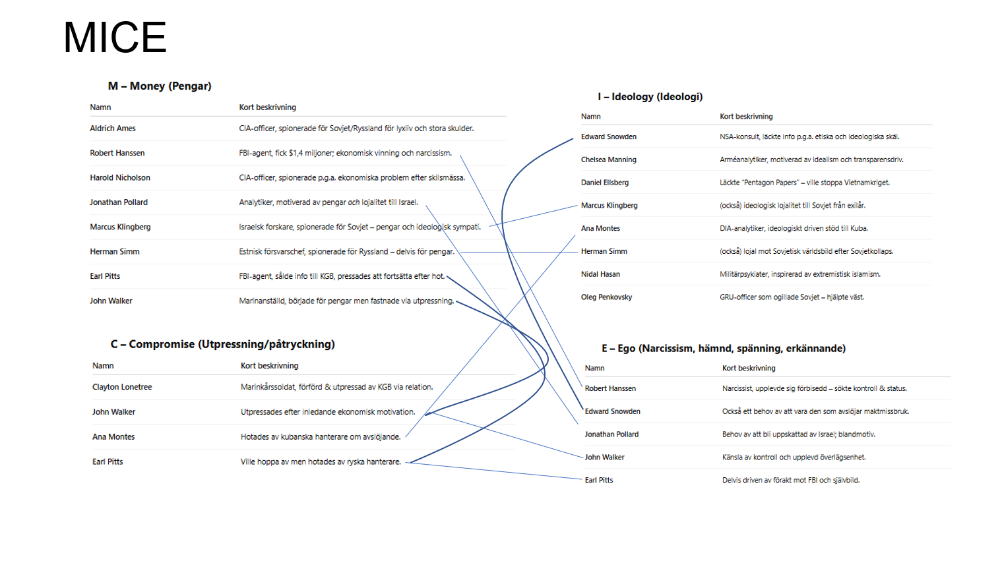
Wikström & Treiber 2016 ↗ · Situational Action Theory
Situational Action Theory (SAT) förklarar regelbrott som resultatet av ett perceptions- och valförlopp. Det räcker inte att peka på ett motiv eller en personlig egenskap: analysen måste visa hur personens moral och självkontroll möter situationens normer, kontroll, frestelser och möjligheter.
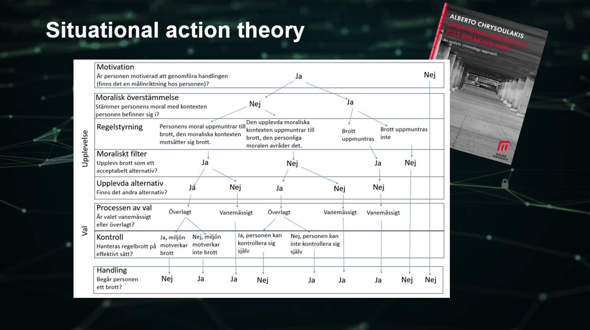
DCSA/CDSE · Critical Pathway
Critical Pathway beskriver en möjlig utvecklingskedja, inte ett automatiskt förlopp. Modellen kompletterar SAT: SAT förklarar hur person och situation formar ett val, medan Critical Pathway visar var observerbara förändringar kan mötas av stöd, rapportering och proportionerlig organisatorisk respons.
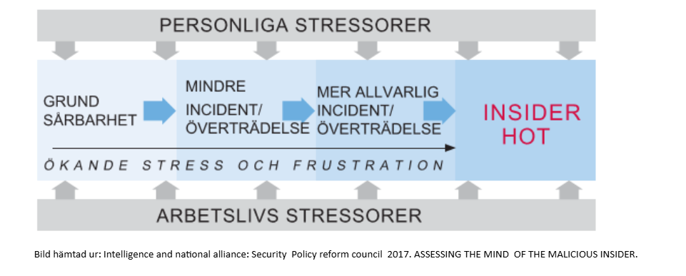
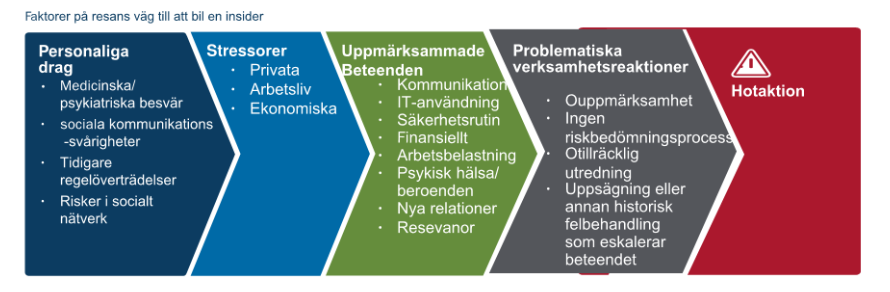
Använd som diskussionsunderlag om hur beteendeindikatorer, stressorer, dataanalys, organisatoriskt klimat och flera kompetenser kan kombineras utan att en enskild datapunkt blir ett automatiskt beslut.
Utvecklingskurva · sex möjliga skeden
Kurvan hjälper läsaren att ordna observationer i tid. Den är inte en naturregel: personer kan stanna, backa, hoppa över steg eller aldrig lämna ett legitimt missnöje. Bedömningen ska därför utgå från vad som faktiskt har sagts eller gjorts, inte från antagandet att nästa steg kommer.
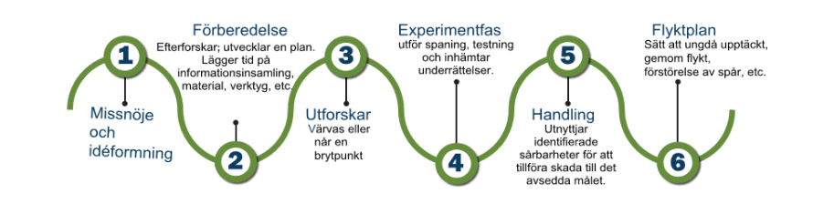
En upplevd oförrätt eller stress får en konkret måltavla och börjar omsättas i en idé.
Informationsinhämtning, material, verktyg eller utökad åtkomst kopplas till ett möjligt tillvägagångssätt.
Personen söker sårbarheter, möjliga mål eller medhjälpare och närmar sig en brytpunkt.
Planen prövas genom spaning, test, repetition eller försök att kringgå en barriär.
Betrodd tillgång och verksamhetskunskap används för att genomföra handlingen.
Spår kan undanröjas, information föras bort eller en fysisk och digital reträtt förberedas.
Missnöje kan vara berättigat och är i sig varken illojalt eller farligt. Relevansen ökar först när personen går från en känsla till konkreta föreställningar om hämnd, en utpekad måltavla, återkommande hot eller en plan som påverkar människor, beslut, information eller drift.
Följ upp aktivt och respektfullt. En rättvis arbetsprocess, möjlighet att bli hörd och synliga alternativ kan bryta ett förlopp. Samtidigt måste konkreta hot dokumenteras och triageras.
Förberedelser kan bestå av informationsinsamling om larm, passersystem, IT-miljöer eller organisationens upptäcktsförmåga. Det kan också handla om att skaffa utrustning, stjäla inloggningsuppgifter eller försöka höja egna privilegier.
Samma aktivitet kan vara legitim i en teknisk eller säkerhetsrelaterad roll. Arbetsbehov, uppdrag, godkännande och spårbarhet måste därför kontrolleras innan slutsatser dras.
I detta skede kan informationssökningen bli mer målmedveten: vilka data ska föras ut, vilken process ska påverkas, vilken person eller tillgång är målet och var finns den svagaste kontrollen? Även försök att rekrytera andra kan förekomma.
Begreppet brytpunkt får inte användas för att påstå att ett beslut är psykologiskt fastställt. Organisationen behöver i stället jämföra observerade handlingar med roll, behörighet, tidigare mönster och alternativa förklaringar.
Testning kan synas som obehöriga inloggningsförsök, återkommande passageförsök, prov av larm, ovanliga utskrifter eller försök att dölja aktivitet. En upptäckt överträdelse som lämnas helt utan respons kan normalisera nästa försök.
Responsen måste vara konsekvent men inte mekaniskt bestraffande. Ett legitimt testuppdrag, felkonfiguration eller utbildningsbrist kan se likadant ut i en logg.
Prioriteten flyttas till liv och hälsa, skadebegränsning, kontinuitet och bevisbevarande. Intern utredning får inte störa en polisiär förundersökning eller utsätta rapportörer och andra berörda för ytterligare risk.
Efter en handling kan personen försöka radera loggar, föra bort material, skapa en falsk förklaring eller lämna arbetsplatsen. Organisationen behöver samtidigt återställa funktion, skydda drabbade och kontrollera om samma sårbarhet finns kvar.
Analysstöd · fem illustrerade exempel
Fem illustrationer visar hur värderande karaktärsetiketter kan översättas till observerbara kontrollfrågor. Etiketter som ”bedragaren” eller ”sabotören” får inte ersätta en bedömning av bevis, åtkomst, beteendeförändring och alternativa förklaringar.
Fokusera på upprepade, dokumenterade avsteg: obevakad utrustning, osäker informationsdelning, privata verktyg utan godkännande, utebliven rapportering eller samma fel trots tydlig återkoppling.
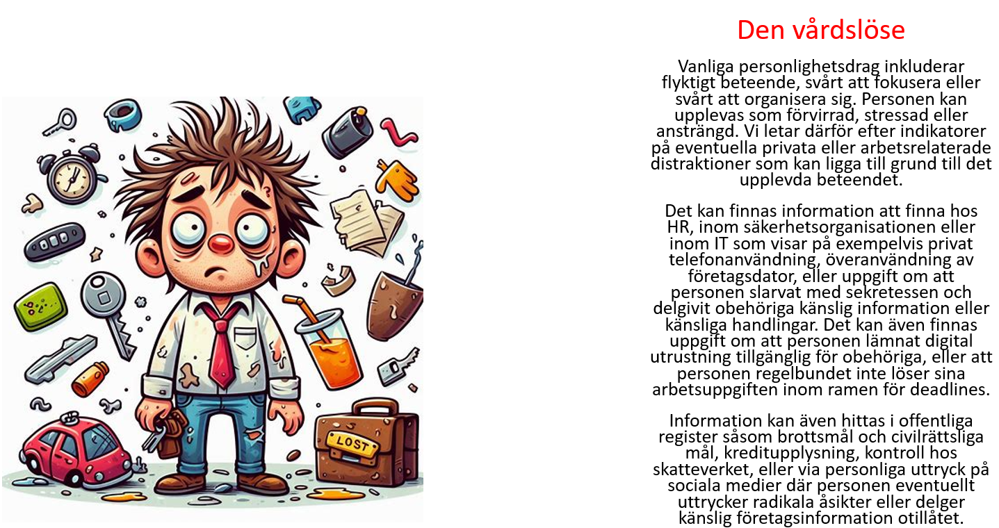
Exempel är åtkomst utan arbetsbehov, privilegiehöjning, ovanliga mängder utskrifter eller nedladdningar, förbjuden inspelningsutrustning och försök att dölja eller radera spår.
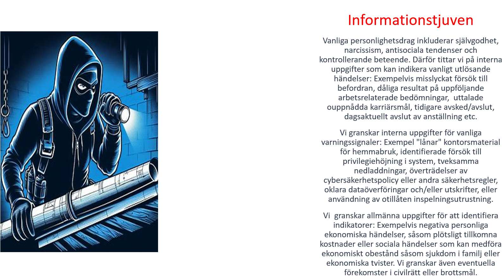
Relevanta observationer kan vara obehöriga tester av larm och passage, manipulerade inställningar, avstängd loggning, oförklarliga fel eller upprepade försök att nå tekniska och fysiska sårbarheter.
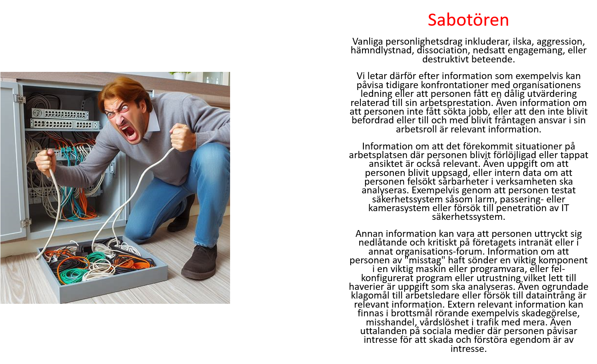
Följ sakliga avvikelser som falska uppgifter, styrning av leverantör för egen vinning, ovanligt kontrollövertag, återkommande undantag, odokumenterade relationer eller transaktioner utan rimligt verksamhetsskäl.
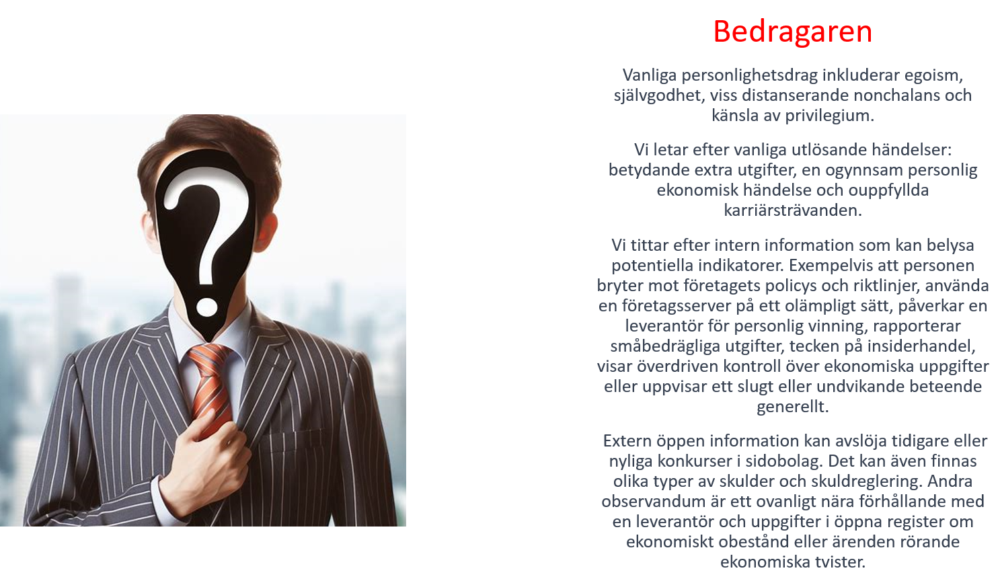
Konkreta hot, målfixering, planering, införskaffade medel, provhandlingar eller uttalanden om omedelbar självskada kräver snabb triage. Psykisk ohälsa eller en diagnos är däremot inte i sig en indikator på våld eller illojalitet.
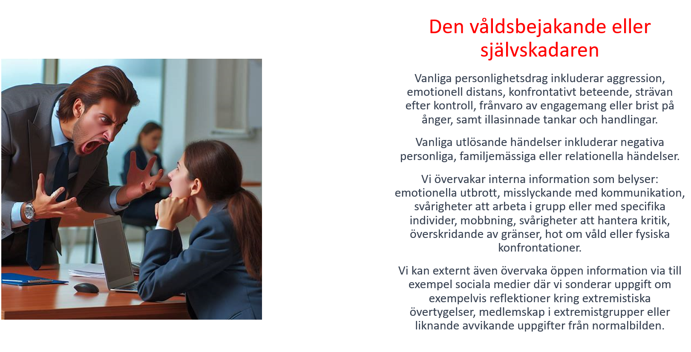
Organisation och offentlig förvaltning · Fem analyslinser
Individmodeller förklarar inte ensamma varför signaler missas, mandat missbrukas eller avvikelser blir normala. De här fem perspektiven riktar analysen mot informationsövertag, handlingsutrymme, lokala relationer, tystnad och processernas utformning.
Brå går igenom hur ett regelverk eller styrsystem analyseras för att identifiera exploaterbara sårbarheter och formulera förebyggande åtgärder. Webbinariet presenterar analysens fem steg och erfarenheter från offentlig verksamhet. Inspelningen är från 2024 men ingår fortfarande i Brås aktuella metodstöd.
Organiserad brottslighet · Polismyndigheten 2024–2025
Rollerna beskriver funktion i den kriminella verksamheten, inte fasta personlighetstyper. Samma person kan byta roll när nätverket, brottsmarknaden eller den egna åtkomsten förändras. Figurerna nedan återger delar av Polismyndighetens lägesbild från februari 2024.
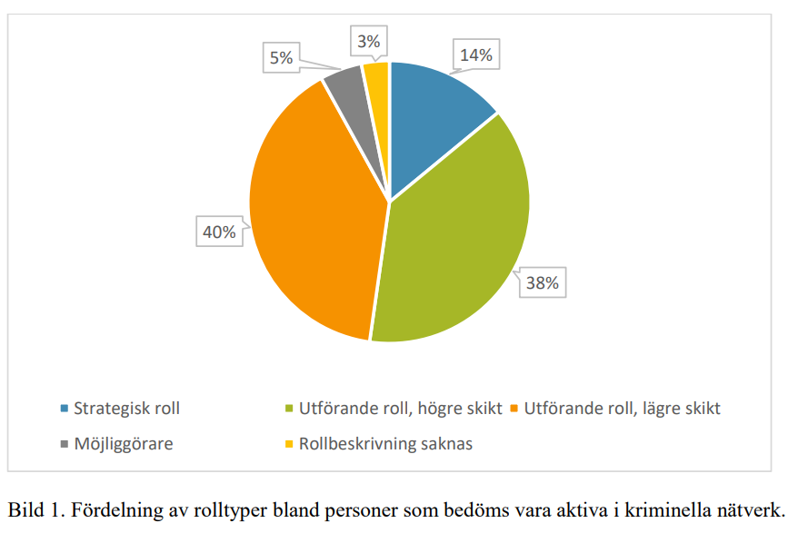
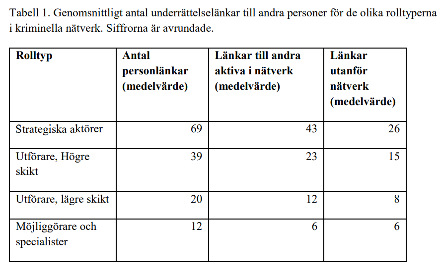
Polismyndigheten · lokal kriminell påverkan · metod uppdaterad 2025
Cylindermodellen är en av fem komponenter som Polisen använder när lokala lägesbilder tas fram. Lokalpolisområdet identifierar underrättelsemisstänkta aktörer som påverkar ett avgränsat område och placerar dem i fyra idealtypiska kategorier. Kategorierna kan överlappa och gränserna är flytande i verkligheten.
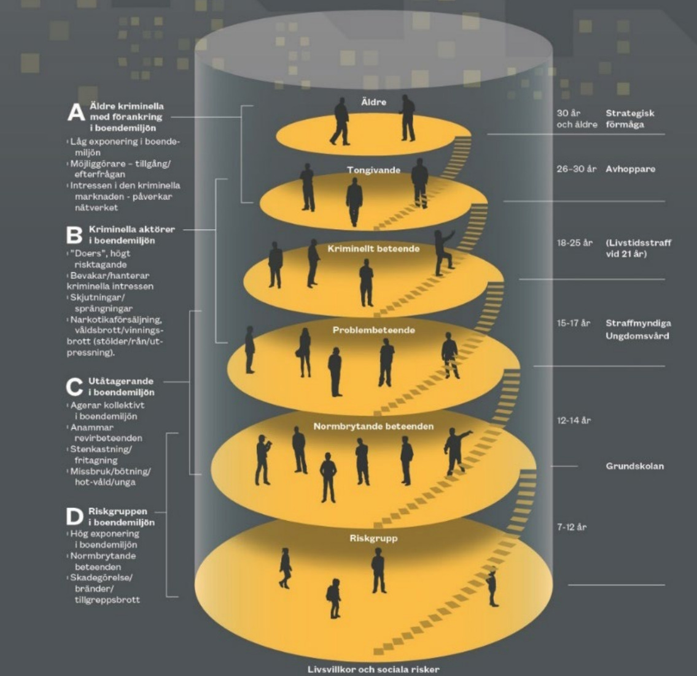
Utsatta områden · uppdatering av 2023 års underlag
År 2023 redovisades 59 områden. År 2025 redovisas 65, varav 19 särskilt utsatta. Ökningen beror på att sju tidigare områden delats upp för högre geografisk precision. Ett område tillkom och ett togs bort. Kategorin riskområde har samtidigt tagits bort ur den nationella bedömningen.
Organiserad brottslighet · Kriminell ekonomi
Bolag, yrkeskompetens och offentliga processer kan ge tillgång, trovärdighet och möjlighet att flytta pengar. Materialet nedan används för att fråga vilka delar av den legitima infrastrukturen som en aktör behöver – och hur kontrollen kan anpassas när motståndaren ändrar metod.
Studien visar att organiserad brottslighet inte står utanför näringslivet. Företagsengagemang kan ge bankkonton, fakturering, anställningar, tillgång till upphandlingar och en legitim förklaring till pengar och tillgångar. Enskilda firmor, aktiebolag och föreningar kan användas på olika sätt beroende på behovet av flexibilitet, kontroll eller trovärdighet.
Resultatet 34 procent gäller de 12 768 personer som ingick i studiens polisiära underlag. Det ska inte generaliseras till hela befolkningen, till alla företagare eller till Polisens senare lägesbilder utan en ny mätning.
Ekobrottsmyndigheten skiljer mellan personer som genom sin yrkesroll säljer information eller tjänster, personer som aktivt bidrar till upplägget och personer som omedvetet delar kunskap som gör brottet möjligt. Brås möjliggörartypologi kompletterar detta med vägen in: personen kan vara manipulerad, upparbetad, affärsmässig eller placerad från början.
Det operativa analysobjektet är därför funktionen: vilken kunskap, behörighet, signatur, legitimitet eller kontakt behöver brottsupplägget? Yrkesgrupp eller privat stress är aldrig i sig bevis för en möjliggörarroll.
SOU 2025:84 och regeringens uppdragsbeskrivning bekräftar problembilden att vapen och droger förekommer vid HVB och att placerade barn och unga kan utnyttjas eller rekryteras av kriminella nätverk. Utredningen föreslog bland annat mer differentierad vård och särskilda befogenheter för att skapa en tryggare miljö.
Uppgiften om 18 bolag på 28 platser kommer från mediers återgivning av ett då sekretessbelagt polisiärt underrättelseunderlag. Eftersom det bakomliggande materialet inte är öppet redovisas siffran som journalistiskt rapporterad, inte som en verifierad och aktuell nationell statistikpost. Samma försiktighet gäller uppgifter om specifika klubbkopplingar bland personal.
Europols kartläggning av de mest hotfulla kriminella nätverken i EU visar att mer än hälften har en hierarkisk struktur med maktnivåer, arbetsdelning och intern kontroll. Outlaw motorcycle gangs nämns bland de miljöer där sådana strukturer förekommer, medan andra nätverk är mer lösa och decentraliserade. I praktiken kan formerna kopplas ihop genom supportergrupper, lokala allianser och gemensamma marknader.
Acta Publicas svenska rapporter beskriver Bandidos, Hells Angels, supporterklubbar och relationer till lokala nätverk. Uppgiften om omkring 640 sammanlagda medlemmar avser rapportens läge andra kvartalet 2024 och är en sekundär uppskattning, inte ett aktuellt officiellt medlemsregister. Medlemskap eller närvaro i en klubbmiljö bevisar inte ett specifikt brott; analysen måste knytas till dokumenterade handlingar och rättsligt läge.
Jämför hur legitima företag kan användas eller tas över och hur upplägg anpassas när kontrollsystem förändras. Crime proofing-frågan är därför dubbel: vad kan processen utnyttjas till, och hur kommer en aktör sannolikt att svara på den nya kontrollen?
Materialet kopplar arbetslivskriminalitet till folkbokföring, skatt och företagsstrukturer samt upphandling till jäv, kravmanipulation, informationsläckage och leverantörsrelationer. Lägg särskild vikt vid funktioner som kan sälja specialistkompetens eller legitimera en transaktion.
Originalproduktionen används som fall om advokater, företagare, ekonomiska upplägg och professionella möjliggörare. YouTube-klippet är en återgivning; originalinformationen och de kompletterande källorna anges separat.
Europols genomgång används för att sätta möjliggöraren i ett större ekosystem. Fråga hur internationella nätverk använder företag, korruption, professionell kompetens och gränsöverskridande logistik – inte bara vilka individer som syns i ett enskilt fall.
Fallstudier · Pröva modellerna
Fallen märks efter åtkomst, väg och kontrollproblem – inte bara efter årtal. En uppgift i en intervju eller nyhetsrapport skiljs från dom, myndighetsrapport och annan primär dokumentation.
Använd dokumentären för att kartlägga vilka kollegor och chefer som hade olika delar av informationen, när avvikande beteenden blev synliga och var informationsdelningen eller responsen brast. Den senare intervjun används enbart som gärningsmannaperspektiv: studera rationalisering, självbild, neutralisering och efterhandskonstruktion – inte som neutral faktakälla.
Dalke-fallet illustrerar hur en person med tidigare legitim tillgång själv kan söka en extern mottagare. Schultz-fallet visar ekonomisk ersättning, känsligt material och ett försök att dra in ytterligare en person; pröva SAT, Critical Pathway, Fraud Triangle och Brås möjliggörartypologi mot samma händelser.
Fallen utmanar bilden av att insiderhot alltid börjar med en redan anställd person som rekryteras. Analysera identitet, bakgrundskontroll, onboarding, leverans av datorer, distansarbete, minsta behörighet och tekniska avvikelser; Reuters-länken ger rättsfallsramen medan videorna ger journalistiska genomgångar.
Rogers · Protection Motivation Theory
Skyddsmotivationsteorin förklarar varför kunskap om ett hot inte automatiskt leder till ett säkrare beteende. Medarbetaren gör dels en hotbedömning, dels en bedömning av om den rekommenderade åtgärden fungerar och är möjlig att genomföra. En stark varning kan därför misslyckas om rapporteringsvägen är oklar, tidskrävande eller upplevs som riskabel.
BJ Fogg · Behavior Design
Fogg sammanfattar modellen som B=MAP: ett beteende uppstår när motivation, förmåga och en utlösande signal finns samtidigt. Modellen utvecklades för beteendedesign och inte specifikt för insiderhot. I säkerhetsarbetet kan den användas för att undersöka vad som underlättar ett säkert beteende och vilka omständigheter som sänker tröskeln för ett skadligt beteende.
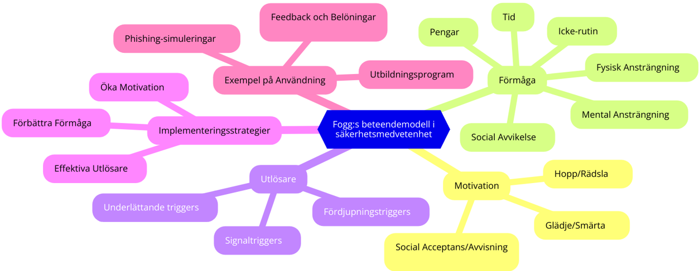
Dimmock, Gerken & Graham · Social påverkan
En amerikansk studie av finansiella rådgivare utnyttjade sammanslagningar mellan företag för att undersöka vad som hände när nya kollegor fördes samman. Sannolikheten för framtida misskötsamhet ökade för rådgivare som exponerades för nya kollegor med dokumenterad tidigare misskötsamhet. Sambandet var starkare mellan demografiskt liknande kollegor.
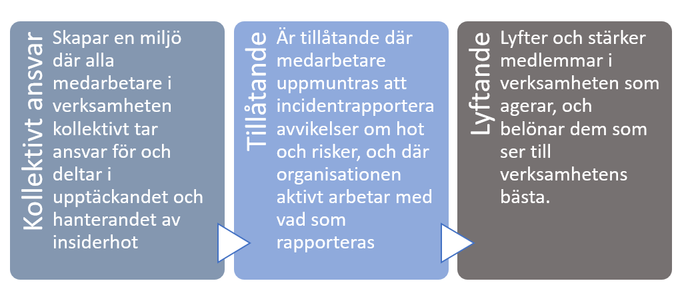
Influence at Work ↗ · Socialpsykologi
Cialdinis sju principer beskriver återkommande mekanismer för påverkan. Här används de som analysstöd för att känna igen kontakt- och relationsbyggande — inte som bevis för att en viss relation är otillbörlig.
Organisationspsykologi · Konfliktdiagnos
Konflikter kan skapa stress, upplevd orättvisa, tystnad och otydliga beslutsvägar. De är därför relevanta i det förebyggande säkerhetsarbetet, men en konflikt är inte i sig en indikator på insideragerande. Börja med att fastställa vad konflikten gäller, på vilken nivå den finns och vad organisationen kan rätta till.
Fem huvudkategorier
Kategorierna är diagnosstöd, inte etiketter på personer. Flera typer kan finnas samtidigt. Öppna ett kort för fördjupning, analysfråga och första hanteringsriktning.
Parterna är oense om hur lön, budget, bemanning, ärenden, tid eller kostnader ska fördelas. Konflikten kan också handla om vem som ska bära ett tungt eller oönskat ansvar.
Två eller flera parter konkurrerar om en position som inte kan delas: en chefsroll, ett expertmandat, attraktiva uppgifter eller informell status. Även roller som ingen vill ta kan skapa samma låsning.
Oenigheten gäller hur organisationen ska fungera: vem som beslutar, hur ärenden ska beredas, vilka rutiner som gäller eller hur informellt framvuxet ansvar förhåller sig till formella beslut. Sådana konflikter blir särskilt tydliga vid omorganisation.
Parterna har olika uppfattning om vilka beteenden som är acceptabla: tonläge, arbetstakt, raster, bemötande, kvalitet, säkerhet eller ansvarstagande. Kritik mot ett beteende kan lätt uppfattas som kritik mot hela personen.
Oenigheten rör vilket synsätt som ska vara vägledande eller vilken metod som bäst når verksamhetens mål. Konflikten blir ofta svår när båda sidor ser den egna ståndpunkten som moraliskt nödvändig.
Grundbehov · Från ståndpunkt till lösning
Ett krav är en föreslagen lösning. Bakom kravet kan det finnas behov av rättvisa, erkännande, tillhörighet, autonomi, trygghet, förutsägbarhet, kompetens, inflytande eller mening. När behovet blir synligt ökar antalet möjliga lösningar.
Frågorna är till för konfliktdiagnos och stöd. De ersätter inte arbetsrättslig utredning, säkerhetsskyddsbedömning eller en prövning av konkreta avvikelser.
Behov av närhet kan möta behov av distans. En person vill arbeta tillsammans, en annan ostört på egen hand. Någon värderar harmoni, en annan vill pröva idéer genom tydlig konkurrens. Sådana skillnader kan förklara återkommande irritation utan att någon av parterna behöver ha fel.
Använd polariteterna för att formulera frågor, inte för att typbestämma människor. Försök inte ställa diagnoser eller dra säkerhetsslutsatser från en personlighetstyp.
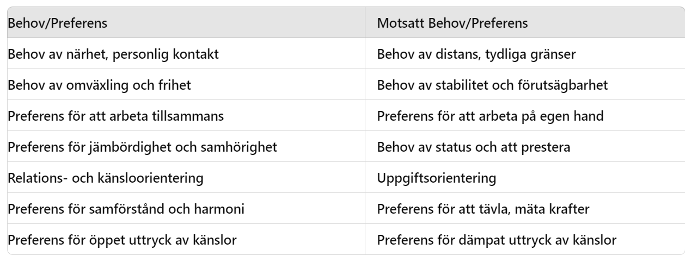
Kulturell erfarenhet kan påverka synen på maktdistans, direkt eller indirekt kommunikation, individuellt och kollektivt ansvar, könsroller och hur starka känslouttryck förstås. En chef som förväntar sig invändningar kan möta en medarbetare som uppfattar lydnad som respekt. Ett direkt budskap kan av en part uppfattas som tydligt och av en annan som ansiktshotande.
Modeller över kulturella dimensioner gäller jämförelser på grupp- och samhällsnivå. De ska inte användas för att förutsäga en enskild persons värderingar eller beteende. Fråga hellre än anta.
World Values Surveys kulturkarta jämför länder och samhällen genom nationellt sammanvägda enkätresultat. Kartan visar relativa värderingsmönster längs två axlar. Den beskriver inte fasta kulturer och säger inte vad en viss person tycker eller hur personen kommer att agera.
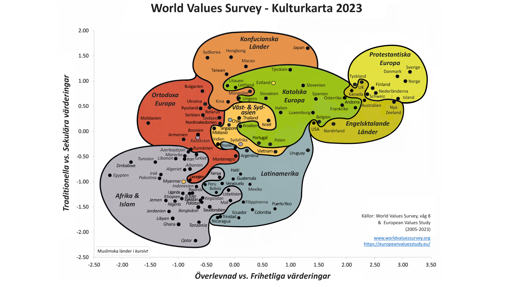
Värdekvadraten visar två legitima värden som behöver varandra. Styrbarhet utan flexibilitet kan övergå i överbyråkratisering. Flexibilitet utan styrbarhet kan övergå i anarki. I en polariserad konflikt beskriver parterna gärna den egna sidan med ett positivt värde och motpartens sida som dess negativa överdrift.
Praktiskt används modellen genom att först formulera båda sidors positiva värde, därefter den risk som följer av ensidighet och slutligen vilken konkret balans som behövs i beslut, mandat och arbetssätt.
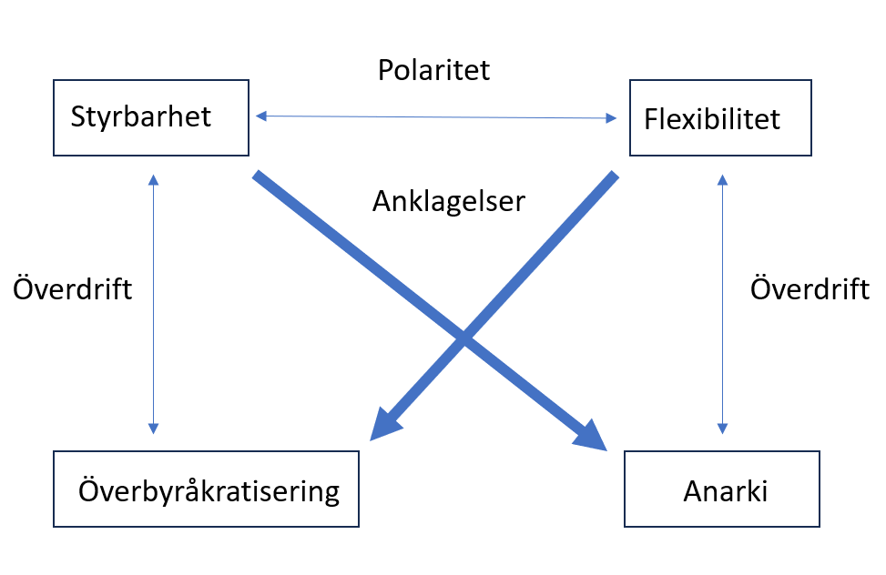
Organisatorisk osäkerhet · Fyra riskförstärkare
Osäkerhet och ångest i organisationer är inte samma sak som psykisk ohälsa hos en individ. Här avses den oro som kan skapas av oklara roller, motstridiga krav, maktasymmetrier och brist på beslut. Den kan bidra till tystnad, ansvarsglapp och långsam hantering.
Driftsångest används här för oro som kan växa när struktur, roller och gränser är för svaga. Medarbetare vet inte vad som förväntas, vem som tar beslut eller vilka impulser och konflikter gruppen kan hantera.
Systemångest beskriver i stället oro och frustration när regleringen blir så rigid att autonomi, initiativ och utveckling upplevs som blockerade. Samma struktur som ger en person trygghet kan därför skapa instängdhet hos en annan.
Den praktiska uppgiften är att skapa tillräcklig tydlighet för ansvar och säkerhet, men tillräcklig flexibilitet för professionellt omdöme. Begreppen beskriver organisatoriska spänningar och ska inte användas som kliniska diagnoser.
Ledarskap kan både förstärka och minska organisatorisk oro. Orealistisk kontroll, ständig bedömning eller aggressiv konfrontation kan göra medarbetare försiktiga och tysta. Detsamma gäller när ledningen signalerar oro men samtidigt förnekar att problem finns.
Ett mer robust ledarskap kombinerar tydliga förväntningar och gränser med öppenhet om osäkerhet. Det gör det möjligt att rapportera misstag, risker och förändrade livsförhållanden tidigt utan att varje uppgift omedelbart behandlas som illojalitet.
Frågorna hjälper chefer, HR, säkerhetsfunktion och juridik att hålla isär stöd, konflikthantering och säkerhetsutredning.
Insiderforskning · Stressorer och riskvägar
Stressorer är inte tecken på skuld. CISA, NPSA och FOI beskriver hur personliga eller yrkesrelaterade påfrestningar kan ingå i en riskväg när de sammanfaller med observerbara beteendeförändringar, faktisk åtkomst och en bristfällig organisatorisk respons. Bedöm förändring och sammanhang — inte diagnoser eller grupptillhörighet.
Analytisk syntes · En möjlig utvecklingsväg
Figuren är INBLICK:s syntes av återkommande moment i källorna — inte en validerad, linjär modell och inte en prognos för en enskild person. Förlopp kan börja på olika ställen, hoppa över steg eller avbrytas. Varje steg visar samtidigt en möjlig punkt för stöd, kontroll eller rapportering.
DNV-fallet · Norge 2018–2020
En studie från 2026 följer hur en rysk SVR-officer under drygt två år byggde en relation med en betrodd DNV-ingenjör. Forskarna identifierade 90 kritiska händelser och visar hur ett initialt säkerhetsmedvetet beteende gradvis kunde försvagas av social manipulation, gåvor och normalisering.
Vilka syns i kända insiderfall? · CPNI-studie 2013 ↗
CPNI-studien (2013) ↗ analyserade kända brittiska insiderfall av flera slag, inte bara spionage. Fördelningarna beskriver äldre, upptäckta fall och får inte användas som personprofil eller som mått på dagens förekomst.
FOI-R--5866--SE ↗ · 70 domar i 20 europeiska länder
FOI:s studie av personer dömda för spionage 2008–2024 breddar hotbilden. Bara 30 av 70 kodades som traditionella insiders i säkerhetsklassade verksamheter. Övriga omfattar bland annat observatörer, mellanhänder, specialister, mobila spioner och personer som gör en enstaka insats.
Mosaikeffekten beskriver hur flera till synes harmlösa uppgifter kan kombineras till en skyddsvärd helhet. Enligt U.S. Department of Justice kan känsliga eller sekretessbelagda delar tillsammans med uppgifter i öppna källor göra det möjligt att rekonstruera en mer avslöjande bild. I praktiken betyder det att riskbedömningen behöver omfatta sammanställningar, återkommande mönster och samlad åtkomst — inte bara varje uppgift bedömd för sig. Läs myndighetens genomgång av mosaikteorin ↗
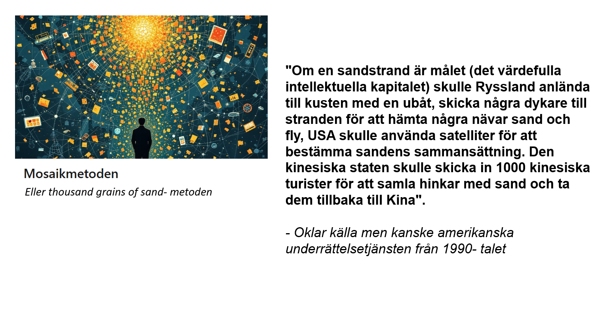
Belfer Center · 25 april 2025 ↗
Chris Taylors studie vid Belfer Center går igenom 174 offentligt kända fall där underrättelseoperationer röjdes mellan 1985 och 2020. Inget fall bedömdes ha fått katastrofala bilaterala följder; 10 fick kritiska och 16 betydande följder, medan övriga fick mindre eller försumbara konsekvenser.
De starkaste sambanden med allvarliga konsekvenser var våld, materiell skada inklusive cyberpåverkan, dold påverkan eller inblandning och personlig påverkan på nationella ledare. Även mållandets historiska känslighet, relationen mellan staterna, tidpunkten och den ansvariga statens reaktion spelade roll. Studien gäller underrättelseoperationer brett — inte enbart insiderfall — och bygger på ett öppet, icke uttömmande material, vilket innebär att hemlighållna fall och auktoritära staters underrapportering begränsar slutsatserna.
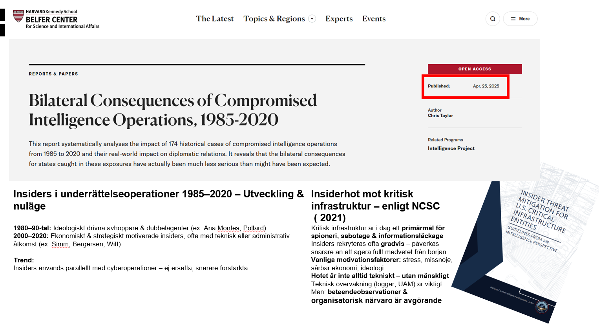
CPNI-studie 2013 ↗ · Primärmotiv
I CPNI:s material kodades ekonomisk vinning som vanligaste primära motiv (47%). Samtidigt hade en tredjedel av fallen mer än en identifierad drivkraft. ”Primärt motiv” är därför en kodning av materialet, inte en fullständig individuell orsaksförklaring.
BESKT · Samtalsstöd vid uppföljande säkerhetsprövning
BESKT används i svenska säkerhetsskyddssammanhang som minnes- och samtalsstöd, bland annat i FMV:s blankett för uppföljande säkerhetsprövning. Områdena kan vara relevanta redan i den initiala prövningen, men stödet hjälper framför allt till att uppmärksamma förändringar över tid. BESKT är inte en lagstadgad metod, ett individuellt poängsystem eller en automatisk misstankemodell. Säkerhetsskyddslagen kräver att prövningen följs upp så länge deltagandet i den säkerhetskänsliga verksamheten pågår, men anger inget generellt årsintervall.
Matrisen visar fem separata områden: besvikelse, ekonomi, sociala förhållanden, kontakter och tillfälle. Rutorna är ett samtals- och bedömningsstöd och ska inte användas som automatisk poängsättning.
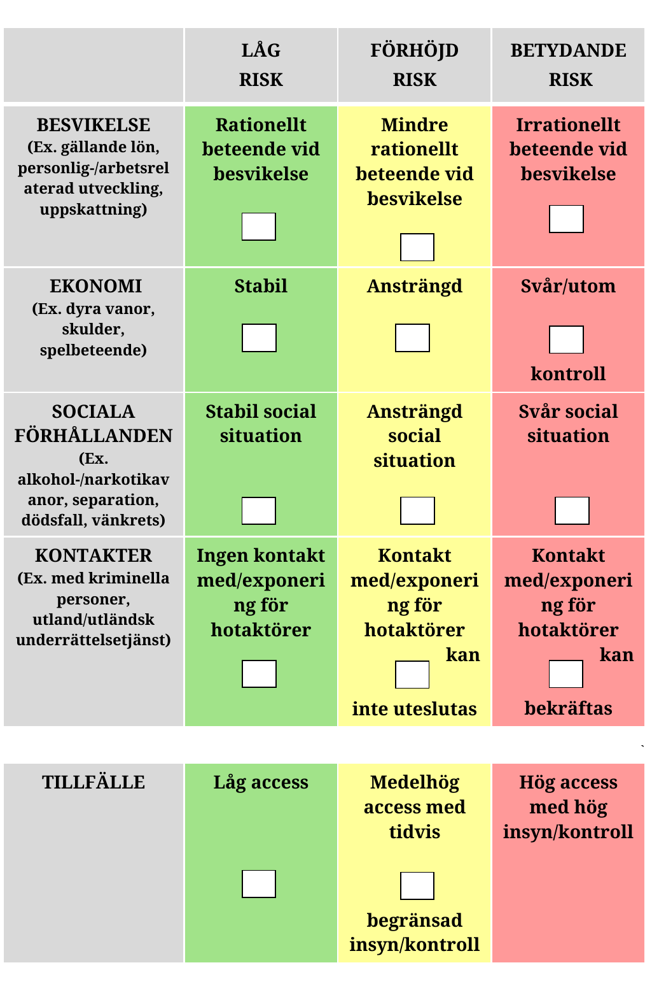
SNS 2023 ↗ · Carina Gunnarson
Rapporten "Den sårbara staten" kartlägger hur relationen mellan organiserad brottslighet och offentliga institutioner utvecklas. Fyra typologier beskriver mönstret — från rovdjur till symbios.
Polismyndigheten/NKIG 2025 ↗ · Aktuell lägesbild
Polisens lägesbild redovisar de korruptionsärenden som Nationella antikorruptions- och immaterialrättsgruppen hanterade under perioden 1 november 2024–1 november 2025. Siffrorna beskriver alltså ett avgränsat myndighetsflöde — inte korruptionens totala omfattning.
Lang 2022 ↗ · Insiderhot och mänskliga faktorer
Lang argumenterar för att policy och teknik är nödvändiga men otillräckliga eftersom insiderhändelser också formas av mänskliga och organisatoriska faktorer. Hans nätverksansats kopplar samman säkerhetsarbete, stöd till människor och samverkan mellan professioner.
Styrning · Compliance · Beslutsintegritet
Policyn ska skydda organisationens beslutsintegritet: att beslut, prioriteringar och kontrollåtgärder grundas på sakliga och dokumenterade skäl — inte på hot, trakasserier, otillbörliga förmåner, beroenden, jäv, vänskapsband eller dold lojalitet. Den behöver därför omfatta både brott, gråzoner och försök som ännu inte har påverkat ett beslut.
Hot, trakasserier, social press, masskontakt eller andra försök att ändra, fördröja eller stoppa ett beslut.
Mutor, otillbörliga förmåner, handel med inflytande och andra sätt att missbruka en anförtrodd ställning.
Privata, ekonomiska eller relationella intressen som kan rubba — eller uppfattas rubba — saklighet och opartiskhet.
Missbruk av legitim åtkomst, etablering i en roll eller påverkan av någon som redan har tillgång eller beslutsmakt.
Definiera förbjudna, rapporteringspliktiga och olämpliga beteenden. Ange att även försök, indirekta förmåner, närstående, mellanhänder, repressalier och intressekonflikter omfattas.
Styrelse eller högsta ledning fastställer nolltolerans mot otillbörliga medel och repressalier — men inte nolltolerans mot att tidiga och osäkra signaler rapporteras i god tro.
Utse policyägare, kontrollägare och beslutsfattare. Reglera vem som tar över när chef, utredare, upphandling, HR eller ledning berörs av uppgifterna.
Knyt risker till beslut, processer, leverantörer och roller. Välj proportionerliga barriärer: arbetsdelning, rotation, attest, jävsdeklaration, behörighetsstyrning, loggning och leverantörskontroll.
Ange beloppsoberoende beslutsfrågor, förhandsgodkännande, registrering och förbudszoner. En förmån kan vara olämplig eller otillbörlig även om den inte leder till åtal.
Beskriv ordinarie rapporteringsväg, akutväg och visselblåsarkanal, konfidentialitet, skydd mot repressalier, mottagningsbekräftelse, återkoppling och alternativ när linjechefen berörs.
Fastställ mandat, rättslig grund, bevisbevarande, hörande, dokumentation och beslutsordning. Skilj tillfälliga skyddsåtgärder från disciplinär bedömning och eventuell brottsanmälan.
Utbilda efter riskroll, följ både rapporter och kontrollernas effekt, redovisa till ledning och styrelse och revidera efter incidenter, förändrad hotbild eller nya verksamhetsprocesser.
Organisationsmodell · Internt samarbete
Otillbörlig påverkan, korruption och insiderrisk hanteras inte av säkerhetsfunktionen ensam. Effektiv hantering kräver att flera delar av organisationen samverkar kring samma skyddsvärden och beslut — utan att skapa en obegränsad persondatabas eller låta en berörd chef styra utredningen.
Indikatorsbibliotek · 25 indikatorer
En signal är inte ett bevis, men flera signaler kan bilda ett mönster. Här finns 25 sökbara varningssignaler med svenska fallexempel och källor. Filtrera på kategori, allvarlighetsgrad eller aktörstyp.
09 · Bedöma · Organisationstestet
Besvara 14 frågor inom sju områden och få en enkel bild av var organisationen står. Rekommendationerna bygger på brister som Riksrevisionen, Brå och Statskontoret har identifierat. Svaren stannar i din webbläsare.
Beräknad lokalt — inga uppgifter sparas.
Prioriterade rekommendationer
Självskattningen visar hur arbetssättet är tänkt att fungera. Kontrollverifieringen prövar om kontrollerna också genomförs och får effekt. Välj få mått, ange datakälla och ansvarig och följ både nivå och förändring över tid.
| Mått | Vad som prövas | Exempel på verifiering |
|---|---|---|
| Tid från signal till bedömning | Om rapporteringsvägen leder till skyndsam triage. | Median och längsta tid per kvartal. |
| Högriskroller med aktuell översyn | Om rollrisk, behörighet och kontrollbehov hålls aktuella. | Andel granskade inom beslutad tidsgräns. |
| Behörigheter efter rollbyte eller avslut | Om fysisk och digital åtkomst verkligen avvecklas. | Stickprov mot HR-, identitets- och passersystem. |
| Kontrollundantagens ålder | Om tillfälliga avsteg har blivit permanent praxis. | Äldsta öppna undantag och andel utan slutdatum. |
| Kontroller som har testats | Om beslutade barriärer fungerar i praktiken. | Andel kritiska kontroller med dokumenterat test och resultat. |
| Tid till återkoppling | Om rapportören får besked och fortsatt förtroende för kanalen. | Andel rapporter med mottagningsbesked och planerad återkoppling. |
| Incidenter som ändrat en kontroll | Om organisationen omsätter erfarenheter i förbättring. | Andel avslutade incidenter med beslutad, ansvarssatt åtgärd. |
11 · Bedöma · Sambandsanalys · 159 fall
Se hur fall, aktörer och sektorer hänger ihop. Klicka på en punkt för detaljer, dra i grafen för att utforska och rulla eller nyp för att zooma.
Materialet saknar ännu enhetlig kodning av metod, upptäcktsväg, kontrollbrist och utfall. Därför visas inte metod × upptäcktsväg eller lyckade respektive stoppade försök. Sådana jämförelser kräver en kodbok och manuell kvalitetsgranskning av varje fall; de bör inte skapas genom automatisk tolkning av korta sammanfattningar.
Antalen påverkas också av vilka fall som har blivit offentliga, möjliga att belägga och relevanta för urvalet. Diagrammen beskriver därför INBLICK:s material — inte den okända faktiska förekomsten.